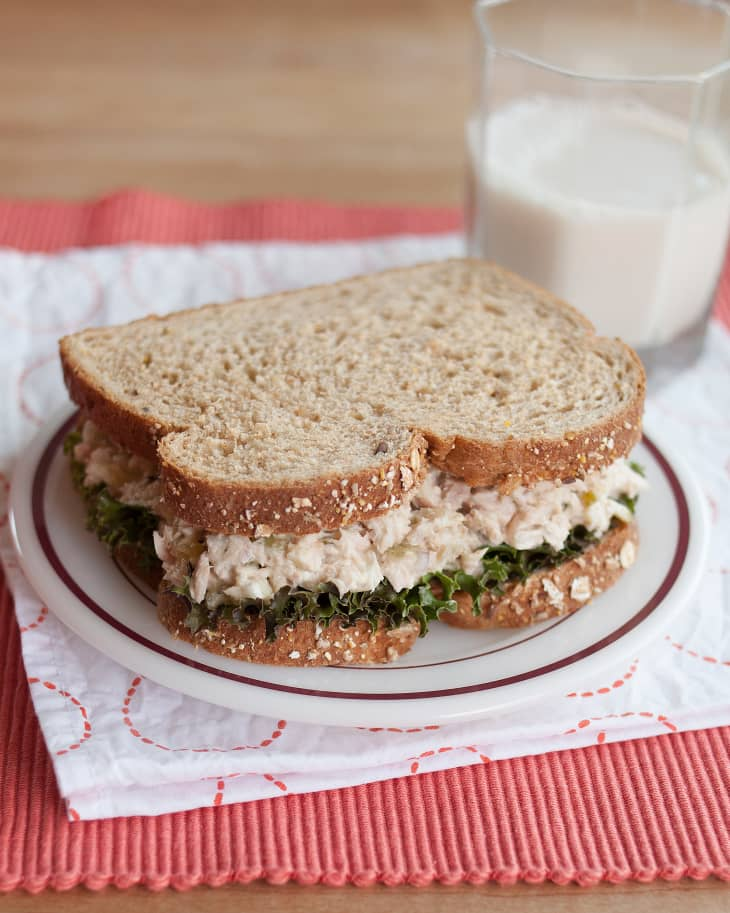

The Best Tuna Salad

Description
Tuna salad is lunchtime comfort food. This basic recipe is the perfect mix of creamy and crunchy, with a mix of tuna, mayo, pickle relish, celery, shallot, and lemon juice.
Originally found this recipe on thekitchn.com, and all credit goes to them for whipping up such a great dish.
Swap Mayo with low fat greek yogurt for a healthier spin on the classic.
Ingredients
- 2 (5-ounce) cans water-packed tuna fish
- 2 to 4 tablespoons mayonnaise (or greek yogurt)
- 1 stalk celery, diced small
- 1 small shallot or 1/4 red onion, diced small
- 1 tablespoon freshly squeezed lemon juice (from 1/2 lemon)
- 1 tablespoon pickle relish (optional)
- Salt and pepper
Steps
- Use a can opener to cut open the cans of tuna fish, but leave the lid in place. Holding the cans over the sink or a bowl, press the lid into the tuna fish and tilt the can to drain all the liquid. Remove the lids and transfer the tuna fish to a medium bowl.
- Add 2 tablespoons mayonnaise, the celery, shallot, lemon juice, pickle relish (if using), a sprinkle of salt, and a few cracks of fresh black pepper to the tuna fish. Stir with a fork to combine, breaking up any large chunks of tuna fish as you go. Add more mayo if you'd like smoother, creamier tuna salad. Taste and add more of any of the ingredients to taste. Use immediately or store in a covered container in the refrigerator for up to a week.